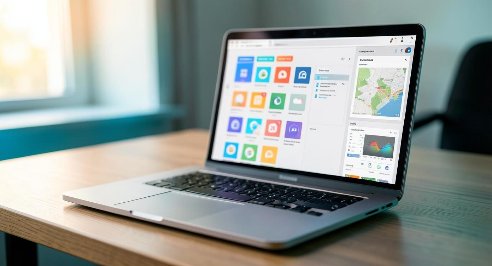
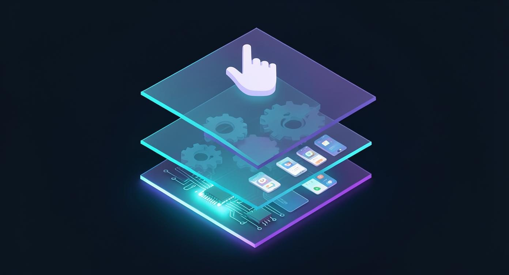

Application Software Kya Hai? Types, Examples aur Farq

Application software kya hai — यह सवाल सुनने में बहुत सीधा लगता है, पर जवाब देते-देते लोग system software, driver और utility को भी उसी थैले में डाल देते हैं। असल में application software वह हिस्सा है जिससे आप अपना असली काम करते हैं: पत्र लिखना, बिल बनाना, ग्राहक का हिसाब रखना, वीडियो काटना, या दोस्त को मैसेज भेजना। बाकी सब उस काम के लिए ज़मीन तैयार करता है।
इस पोस्ट में मैं क्रम से बताऊँगा कि application software क्या है, यह operating system से कैसे अलग है, इसके कितने प्रकार होते हैं, रोज़ काम आने वाले 12 असली उदाहरण, licence के मॉडल, छोटी दुकान या टीम के लिए सही app चुनने का तरीका, और वे गलतियाँ जो लोग हर हफ्ते दोहराते हैं। साथ में यह भी — जब PC धीमा लगे तो गलती app में है या system में, यह तीन मिनट में कैसे पकड़ें।
छोटा जवाब: application software वह program है जो आपके किसी खास काम को पूरा करने के लिए बनाया गया है — जैसे Chrome, MS Word, Excel, WhatsApp, Tally, Canva या कोई UPI app। यह operating system के ऊपर चलता है और उसी से memory, storage, screen और network माँगता है। पहचान का सबसे आसान तरीका यह है — जिसे बंद करने पर computer चलता रहे, वह application software है; जिसे बंद करने पर पूरा computer रुक जाए, वह system software है।
Application software kya hai — सीधी परिभाषा
application software वे programs हैं जो किसी खास काम के लिए लिखे जाते हैं और सीधे उपयोगकर्ता के सामने चलते हैं। जब आप Word खोलकर offer letter लिखते हैं, Excel में महीने का हिसाब बनाते हैं, Canva में Instagram post बनाते हैं या UPI app से पैसे भेजते हैं — हर बार आप application software ही इस्तेमाल कर रहे हैं। इसे end-user software या छोटा करके app भी कहा जाता है।
इसकी दूसरी पहचान यह है कि इसे आप चलाते हैं, यह खुद से नहीं चलता। आप जब चाहें इसे खोलते हैं, काम खत्म होने पर बंद कर देते हैं, और बंद करने के बाद computer पहले जैसा चलता रहता है। Windows खुद से चलता है, आपका billing app नहीं।
एक पंक्ति की परिभाषा
सरल शब्दों में — application software वह software है जो computer के hardware और operating system के ऊपर बैठकर आपके एक काम को पूरा करता है, और जिसका सीधा फायदा उपयोगकर्ता को मिलता है।
"Application" नाम कहाँ से आया
यह शब्द अंग्रेज़ी के "application of computers to a task" से आया है — यानी computer की ताकत को किसी एक काम पर लगाना। साठ-सत्तर के दशक में जब computer सिर्फ बड़े संस्थानों के पास थे, तब हर काम के लिए अलग program लिखा जाता था और उसी को application कहते थे। आज वही शब्द mobile की स्क्रीन पर पड़े हर छोटे icon पर लागू होता है।
Application software kaise kaam karta hai
समझने का सबसे आसान तरीका परतों वाला है। सबसे नीचे hardware है — processor, RAM, SSD, screen, keyboard। उसके ऊपर operating system, जो इन सबको संभालता है। उसके ऊपर application software बैठता है, और सबसे ऊपर आप।
Application को खुद से नहीं पता कि screen पर pixel कैसे बनते हैं या file disk के किस हिस्से में जाती है। वह सिर्फ operating system से कहता है — "मुझे एक window चाहिए", "यह data इस नाम से save कर दो", "मुझे internet भेजने दो"। बाकी काम operating system करता है। इसी वजह से एक ही app Windows और macOS के लिए अलग-अलग बनता है, और Android वाला WhatsApp Windows के WhatsApp Desktop से अलग चीज़ है।
File save करने में अंदर क्या होता है
- आप Ctrl+S दबाते हैं — यह input app तक पहुँचता है।
- App तय करता है कि क्या लिखना है — text, formatting, तस्वीरें, सब कुछ।
- वह operating system को बोलता है कि इतने byte इस नाम की file में लिख दो।
- Operating system file system से जगह ढूँढ़ता है, लिखता है और वापस confirm करता है।
- App आपको "Saved" दिखाता है।
अगर बीच में बिजली चली जाए, तो गड़बड़ जिस परत में हुई उसी पर आरोप लगता है। कभी app अपनी copy ठीक से नहीं लिख पाता, कभी disk भर जाती है, कभी antivirus file को रोक देता है। इसीलिए "file corrupt ho gayi" का मतलब हर बार एक ही चीज़ नहीं होता।
एक app को क्या-क्या चाहिए होता है
हर application कुछ संसाधन माँगता है — थोड़ी RAM, थोड़ा processor time, कुछ storage, और ज़रूरत के हिसाब से screen, camera, microphone या internet। Chrome जैसा browser ज़्यादा RAM माँगता है क्योंकि हर tab का अपना हिस्सा होता है। कोई video editor GPU और बहुत सारी RAM माँगता है। WhatsApp Desktop कम में चल जाता है। इसीलिए "यह app मेरे PC पर धीमा है" का जवाब app के नाम से नहीं, उसकी ज़रूरत और आपके hardware के मेल से मिलता है।

Application software ke types
Application software को कंपनियाँ कई तरह से बाँटती हैं, पर काम के हिसाब से देखें तो नीचे दी गई सूची लगभग सब कुछ कवर कर लेती है। ध्यान रखें, एक app एक से ज़्यादा खाने में बैठ सकता है — Excel हिसाब भी रखता है और report भी बनाता है।
| प्रकार | किस काम के लिए | उदाहरण |
|---|---|---|
| Productivity / office | दस्तावेज़, हिसाब, presentation | MS Word, Excel, Google Docs |
| Business / accounting | बिल, stock, GST, ग्राहक | Tally, Vyapar, Zoho Books |
| Communication | मैसेज, कॉल, मेल | WhatsApp, Zoom, Gmail, Slack |
| Browser | internet पर काम | Chrome, Firefox, Edge |
| Media और design | तस्वीर, वीडियो, ऑडियो | Photoshop, Canva, Premiere, VLC |
| Education | पढ़ाई, टेस्ट, class | Google Classroom, Duolingo |
| Developer tools | code लिखना, टेस्ट, deploy | VS Code, Android Studio, Git |
| Entertainment | फिल्म, संगीत, गेम | Spotify, Steam games |
| Custom / bespoke | कंपनी का अपना काम | अपना ERP, CRM या billing system |
| Utilities | छोटे रोज़ के काम | 7-Zip, calculator, file manager |
इस तालिका में एक बात छिपी है — custom software। बड़ी कंपनियों का बहुत सारा software बाज़ार में मिलता ही नहीं। वह किसी एक कंपनी के लिए लिखा जाता है, उसी के process के हिसाब से। यही सबसे महँगा और सबसे कम लचीला application software होता है, क्योंकि बाद में बदलाव के लिए उसी टीम को ढूँढ़ना पड़ता है।
12 असली उदाहरण जो रोज़ काम आते हैं
परिभाषा याद रखने से बेहतर है उदाहरण याद रखना। ये बारह apps भारत में सबसे ज़्यादा इस्तेमाल होते हैं और हर एक अलग श्रेणी का प्रतिनिधि है।
- Chrome: browser। यह application software है, पर इसके अंदर चलने वाली websites अलग चीज़ हैं — वे कहीं और से आती हैं, आपके PC पर इंस्टॉल नहीं होतीं।
- MS Word: दस्तावेज़ बनाना। पत्र, offer letter, agreement सब यहीं बनते हैं।
- Excel: हिसाब और डेटा। छोटी दुकान से लेकर बड़ी कंपनी तक, सबसे ज़्यादा इस्तेमाल होने वाला business tool।
- WhatsApp Desktop: मैसेज और कॉल। मोबाइल वाले app का PC संस्करण।
- Zoom: video meeting। इंस्टॉल वाला app भी है और browser से चलने वाला रूप भी।
- Tally: accounting और billing। दुकान और CA दोनों के यहाँ मिलेगा।
- Canva: डिज़ाइन। बिना Photoshop सीखे poster, thumbnail और social post।
- Photoshop: तस्वीरों का पेशेवर काम। भारी app, अच्छा GPU और RAM माँगता है।
- VLC: कोई भी वीडियो फाइल चलाने वाला। इसकी खास बात यह है कि यह लगभग हर format खोल लेता है।
- 7-Zip: फाइल दबाना और खोलना। तकनीकी रूप से utility है, पर उपयोगकर्ता के लिए यह बस एक app है।
- VS Code: code लिखने का editor। डेवलपर का सबसे आम औज़ार।
- Google Pay या PhonePe: UPI भुगतान। असल काम bank के server पर होता है, app सिर्फ दरवाज़ा है।
अगर आप देखें, तो इनमें से कुछ पूरी तरह आपके PC पर चलते हैं (Photoshop, VLC), कुछ आधे-अधूरे (WhatsApp), और कुछ सिर्फ खिड़की की तरह हैं (UPI app, Google Docs)। इस फर्क को समझना आगे के हिस्से में काम आएगा।
System software aur application software me farq
यह फर्क सबसे ज़्यादा पूछा जाता है और सबसे ज़्यादा गलत समझा जाता है। दोनों software हैं, पर इनका काम, मालिक और खराबी का असर अलग होता है।
| पहलू | System software | Application software |
|---|---|---|
| काम | machine को चलाना और संभालना | उपयोगकर्ता का काम करना |
| उदाहरण | Windows, Linux, drivers, backup tool | Chrome, Word, Tally, WhatsApp |
| कौन चलाता है | खुद, background में | आप, जब चाहें |
| बंद करने पर | पूरा system रुक सकता है | बस वह window बंद होती है |
| गड़बड़ी का असर | पूरा computer प्रभावित | आमतौर पर एक ही app |
| कौन बनाता है | OS कंपनी या hardware निर्माता | कोई भी software कंपनी या आप खुद |
एक सीधा तरीका याद रखने का — system software वह फर्श है जिस पर आप चलते हैं, application software वह सामान है जो आप उठाते हैं। फर्श खराब हो तो सामान किसी काम का नहीं। अगर आपको drivers, utilities और operating system की गहराई में जाना है, तो system software kya hai वाली पूरी गाइड पढ़ लें — वहाँ यही ढाँचा दूसरी तरफ से खोला गया है।
Utility, driver aur app — overlap कहाँ होता है
किताबी परिभाषा कहती है कि utility system software का हिस्सा है। पर असल ज़िंदगी में आप 7-Zip या किसी cleaner को Microsoft Store से एक आम app की तरह इंस्टॉल करते हैं, उसे खुद खोलते हैं और बंद कर देते हैं। इसलिए परिभाषा से ज़्यादा काम देखें।
मेरा सरल नियम यह है — अगर वह चीज़ आपके बाकी कामों को संभालने के लिए है (antivirus, backup, disk cleaner, driver), तो उसे system की तरफ रखें। अगर वह आपका कोई खास काम करती है (zip बनाना, PDF जोड़ना, तस्वीर छोटी करना), तो उसे app मान लें। Windows का Calculator app भी इसी तरह बीच में पड़ता है — तकनीकी रूप से utility, पर व्यवहार में एक app। इस बहस से उलझने का कोई फायदा नहीं, जब तक आप किसी exam या interview की तैयारी नहीं कर रहे।
Native, web aur mobile app — एक काम के तीन रूप
आज एक ही काम तीन तरह से किया जा सकता है, और हर तरीके की कीमत अलग है। यह समझ लेना ज़रूरी है क्योंकि बहुत लोग एक ही चीज़ के तीन-चार version इंस्टॉल करके परेशान रहते हैं।
| पहलू | Native app | Web app | Mobile app |
|---|---|---|---|
| इंस्टॉल | पूरा इंस्टॉल होता है | कुछ नहीं, browser में खुलता है | Play Store या App Store से |
| Offline | पूरा काम करता है | सीमित या बिल्कुल नहीं | app पर निर्भर |
| Update | आपको इंस्टॉल करना पड़ता है | खुद हो जाता है | Store से, अक्सर अपने आप |
| स्पीड | सबसे तेज़ | network पर निर्भर | ठीक, पर फोन के हिसाब से |
| डेटा कहाँ | आपके PC पर | कंपनी के server पर | दोनों जगह |
इसीलिए Google Docs का web version है, Chrome का native app है, और WhatsApp के तीन रूप हैं। एक ही काम के लिए तीन चीज़ें इंस्टॉल करना ज़रूरी नहीं — जो रोज़ चाहिए उसे native रखें, जो महीने में एक बार, उसे browser में खोल लें। अगर आप फोन के Android apps PC पर चलाना चाहते हैं, तो उसका तरीका Windows 11 पर Android चलाने की गाइड में विस्तार से लिखा है।
Licence ke model — app खरीदने से पहले ये समझें
Application software की कीमत सिर्फ उसके feature से तय नहीं होती, licence के मॉडल से होती है। यही वजह है कि दो apps जो एक जैसा काम करते हैं, एक साल में ₹1,500 और दूसरा ₹40,000 में पड़ सकते हैं।
- Freeware: मुफ्त इस्तेमाल करें, पर code बंद है। उदाहरण — Zoom का free plan, Adobe Reader।
- Open source: code खुला है, कोई भी देख और बदल सकता है। उदाहरण — LibreOffice, GIMP, VLC। यह मुफ्त होना ज़रूरी नहीं, पर अक्सर होता है।
- Freemium: बुनियादी चीज़ मुफ्त, काम की चीज़ें paid। Canva, Notion, Dropbox इसी तरह चलते हैं।
- Subscription (SaaS): हर महीने प्रति user पैसा। Microsoft 365, Google Workspace, Tally का नया मॉडल।
- Perpetual licence: एक बार पैसा, फिर हमेशा चलाएँ — पर नए version के लिए दोबारा पैसा लग सकता है।
- Trial: 7 से 30 दिन मुफ्त, फिर बंद या सीमित।
- Site या volume licence: कंपनी के कई computer के लिए एक साथ।
दुकान या छोटी कंपनी के लिए एक बात याद रखें — subscription का असली फायदा यह है कि हर साल पुराना version खराब नहीं होता और GST invoice मिल जाता है। नुकसान यह है कि user बढ़ने पर बिल भी बढ़ता रहता है। इसलिए पहले साल के लिए subscription लें और दूसरे साल देखें कि कितने लोग वाकई रोज़ खोलते हैं। जो seat खाली पड़ी है, उसे बंद करना सबसे आसान बचत है।
छोटी दुकान या team के लिए app stack
पाँच-छह लोगों की टीम के लिए सबसे काम का setup यही है। यहाँ मैंने हर ज़रूरत के लिए केवल एक app रखा है, क्योंकि दो app एक ही काम के लिए रखने से ही सबसे ज़्यादा गड़बड़ होती है।
| ज़रूरत | सुझाया app | क्यों |
|---|---|---|
| बिल और stock | Tally या Vyapar | GST invoice और stock एक ही जगह |
| दस्तावेज़ और sheet | Google Workspace | फाइल एक जगह, किसी भी device से |
| ग्राहक से बात | WhatsApp Business | catalogue, quick reply, लेबल |
| डिज़ाइन | Canva | बिना डिज़ाइनर के post और poster |
| बैकअप | Google Drive या OneDrive | लैपटॉप खराब होने पर भी data बचा |
| मीटिंग | Google Meet या Zoom | जो ग्राहक के पास पहले से हो |
इस पूरे setup में सबसे ज़रूरी चीज़ app नहीं, आदत है — बिल वहीं बने जहाँ stock हो, और फाइल वहीं रहे जहाँ बैकअप हो। मैंने ऐसी दुकानें देखी हैं जहाँ Tally में एक हिसाब था, Excel में दूसरा, और WhatsApp में तीसरा। app तीनों अच्छे थे, फिर भी महीने के अंत में मिलान नहीं होता था। इसीलिए app चुनने से पहले यह तय करें कि सच किस जगह रहेगा।
App चुनने के 7 सवाल
कोई भी नया application software इंस्टॉल करने से पहले ये सात सवाल खुद से पूछें। इनमें से दो के जवाब "नहीं" आए तो रुक जाएँ।
- यह कौन सा काम करेगा? अगर जवाब एक वाक्य में नहीं आता, तो app आपके काम से बड़ा है।
- अभी यह काम कैसे हो रहा है? अगर हो रहा है, तो नया app सचमुच क्या बेहतर करेगा — यह लिखकर देखें।
- डेटा कहाँ जाएगा? आपके PC पर, कंपनी के server पर, या तीसरे देश में? ग्राहक का नाम और फोन नंबर भी डेटा है।
- बंद करने पर डेटा निकाला जा सकता है? export का विकल्प न हो तो वह app आपको बाँध देता है।
- बिल कितना और किस-किस का? per user, per device, per feature — तीनों अलग-अलग होते हैं।
- सपोर्ट किस भाषा में और कब? दुकान के लिए यह feature से ज़्यादा ज़रूरी है।
- एक साल बाद मैं इसे क्यों नहीं छोड़ पाऊँगा? अगर जवाब "डेटा वहीं फँसा है" है, तो आज ही export वाला विकल्प देखें।
6 आम गलतियाँ
- एक ही काम के तीन apps। दो note apps, दो PDF tools, दो cloud drive — नतीजा यह होता है कि ज़रूरी फाइल हमेशा तीसरी जगह होती है।
- Cracked या "modded" software। सस्ता लगता है, पर इंस्टॉलर के साथ जो चीज़ आती है वह अक्सर आपके browser का homepage, search engine और कभी-कभी बैंकिंग details होती है।
- System के काम में app डालना। Registry cleaner, "PC speed booster" जैसे tools असल में सुधार कम और जोखिम ज़्यादा करते हैं।
- अनजान साइट से setup डाउनलोड करना। हमेशा कंपनी की official साइट या Microsoft Store से लें।
- एक licence कई लोगों में बाँटना। कुछ समय चलता है, फिर अचानक बंद हो जाता है — और उसी दिन सबसे ज़्यादा काम होता है।
- Migration से पहले बैकअप न लेना। नया app अच्छा लगे तो भी पुराने data का export पहले ले लें।
PC धीमा लगे तो: app की गलती या system की?
यह सवाल हर हफ्ते किसी न किसी के मुँह से आता है, और इसका जवाब अंदाज़े से नहीं, Task Manager से मिलता है। तीन मिनट का काम है।
तीन मिनट की जाँच
- Ctrl+Shift+Esc दबाकर Task Manager खोलें और "More details" पर क्लिक करें।
- Processes tab में Memory के column पर क्लिक करें, ताकि सबसे भारी app ऊपर आ जाए।
- देखें कि कौन सा app सबसे ज़्यादा RAM या CPU खा रहा है — अक्सर जवाब browser का कोई tab होता है, जिसमें कोई भारी website खुली है।
- Performance tab में जाकर देखें कि RAM कितने प्रतिशत भरी है और disk 100% पर अटकी है या नहीं।
- अगर एक ही app बार-बार ऊपर आता है, तो समस्या app की है। अगर सब कुछ थोड़ा-थोड़ा भारी है और RAM 90% के पास है, तो समस्या system की है।
आमतौर पर नतीजा यही निकलता है — 8 GB RAM वाले लैपटॉप पर 20 Chrome tabs और एक video call साथ चल रहे होते हैं। वहाँ कोई app खराब नहीं, बस जगह कम है। ऐसे में पहले tabs बंद करें, फिर startup apps कम करें, और उसके बाद ही hardware की सोचें। RAM और SSD के सही क्रम में upgrade करने का पूरा हिसाब RAM, SSD और GPU upgrade वाली गाइड में दिया है।
AI के बाद application software ka matlab kya badla
2026 में लगभग हर बड़ा app अपने अंदर कोई AI feature लेकर आया है — Word में लिखने का सुझाव, Excel में सवाल पूछकर formula, Canva में एक line से डिज़ाइन, और browser में सारांश। तकनीकी रूप से यह वही application software है, पर इसका असर तीन जगह दिखता है।
पहला — काम का तरीका बदलता है। पहले आप tool सीखते थे, अब tool आपकी भाषा समझने लगा है। दूसरा — डेटा का सवाल ज़्यादा ज़रूरी हो गया है। जब आप किसी document को AI feature में डालते हैं, तो वह आपके PC से बाहर जा सकता है। तीसरा — कीमत का ढाँचा बदल रहा है, क्योंकि हर AI सवाल का अपना खर्च होता है, इसलिए free plan की सीमाएँ तेज़ी से बदलती हैं।
इसलिए आज कोई app चुनते समय एक सवाल और जोड़ लें — "इसका AI हिस्सा मेरा डेटा कहाँ भेजता है?" जवाब अगर साफ न मिले, तो उस feature को बंद रखें और app का बाकी हिस्सा इस्तेमाल करें। यह सलाह खासकर उन लोगों के लिए है जो ग्राहक का data अपने laptop पर रखते हैं।
मैंने application software के बारे में क्या सीखा
कुछ साल पहले मैंने अपने लैपटॉप पर गिनती की, तो 40 से ज़्यादा apps इंस्टॉल थे। महीने में सचमुच खुलने वाले आठ थे। बाकी सिर्फ जगह ले रहे थे, startup में चल रहे थे और update माँगते रहते थे। जब मैंने उन्हें हटाया, तो कोई काम नहीं रुका — उल्टा laptop पहले से तेज़ लगा। उस दिन के बाद मेरा नियम है: नया app तभी, जब कोई काम दो हफ्ते से अटका हुआ हो।
दूसरी सीख billing software से मिली। एक दुकानदार ने Tally खरीदा, पर उसका पूरा stock Excel में ही रखा, क्योंकि Excel आसान लगता था। छह महीने बाद पता चला कि Tally का data और Excel का data अलग-अलग चल रहे थे। App दोषी नहीं था — दोषी यह फैसला था कि सच कहाँ रहेगा। अब मैं किसी को भी app दिलाने से पहले यही पूछता हूँ कि वह एक जगह से सारा काम करेगा या नहीं।
तीसरी सीख — मुफ्त और सस्ते में फर्क है। मुफ्त app अक्सर अपने free plan की सीमा धीरे-धीरे कम करता है, और जिस दिन आपका काम उस पर निर्भर हो जाता है, उसी दिन paid plan ज़रूरी हो जाता है। यह बुरा नहीं है, बस पहले से मानकर चलें। दफ्तर के लिए free productivity apps की सूची 12 free productivity tools वाली पोस्ट में है, और वहाँ हर tool के free tier की सीमा भी लिखी है।
अक्सर पूछे जाने वाले सवाल
Application software और app में क्या फर्क है?
कुछ नहीं। "App" application का छोटा रूप है, जो mobile के ज़माने में आम हो गया। जब लोग "app" कहते हैं तो आमतौर पर mobile या desktop का वही program मतलब होता है जिसे किताबें application software कहती हैं।
क्या browser application software है?
हाँ। Chrome, Firefox या Edge खुद application software हैं, क्योंकि उन्हें आप चलाते हैं और बंद करने पर system नहीं रुकता। पर उनके अंदर खुलने वाली websites अलग चीज़ हैं — वे किसी दूसरे computer से आती हैं, आपके PC पर इंस्टॉल नहीं होतीं।
Antivirus किस श्रेणी में आता है?
यह utility है, इसलिए तकनीकी रूप से system software की तरफ गिना जाता है। पर आप उसे आम app की तरह इंस्टॉल और खोलते हैं। व्यवहार में यह फर्क मायने नहीं रखता; जो मायने रखता है वह यह है कि वह पूरे system के साथ गहराई तक जुड़ता है, इसलिए उसे भरोसेमंद कंपनी का ही लें।
क्या games application software हैं?
हाँ, games भी application software हैं — entertainment श्रेणी में। भारी games GPU और बहुत सारी RAM माँगते हैं, इसलिए उन्हें कभी-कभी अलग श्रेणी में रखा जाता है, पर परिभाषा वही रहती है।
क्या WhatsApp Web भी application software है?
वह web app है — browser में चलता है, आपके PC पर इंस्टॉल नहीं होता और आपका फोन चालू रहना ज़रूरी है। WhatsApp Desktop native app है, इसलिए वह फोन बंद होने पर भी कुछ काम करता है। दोनों एक ही सेवा के दो रूप हैं, दो अलग products नहीं।
मुफ्त app लूँ या paid?
पहले मुफ्त वाले से काम चलाएँ, पर तीन चीज़ें जाँच लें — export का विकल्प है या नहीं, डेटा कहाँ रहेगा, और free plan की सीमा क्या है। जिस app पर रोज़ का काम टिका हो और जिससे पैसा कमाया जा रहा हो, उसके लिए paid plan लेना ठीक है — खासकर जब GST invoice मिलता हो।
अंत में
Application software वह हिस्सा है जिससे computer आपके काम का होता है। Windows उसे चलने की जगह देता है, driver उसे hardware से जोड़ता है, और application वह काम करता है जिसके लिए आपने computer खरीदा था। इसलिए किसी भी गड़बड़ी में पहला सवाल यह नहीं होना चाहिए कि "कौन सा app अच्छा है", बल्कि यह कि "मेरा काम कहाँ हो रहा है और उसका data कहाँ है"।
शुरुआत के लिए तीन काम करें। पहला — अपने laptop या फोन पर इंस्टॉल apps की सूची देखें और जो एक महीने में एक बार भी नहीं खुले, उन्हें हटा दें। दूसरा — हर ज़रूरत के लिए एक ही app चुनें और उसी पर टिके रहें। तीसरा — जिस app में आपका असली data है, उसका बैकअप और export का तरीका आज ही एक बार आज़मा लें। यह तीसरा काम सबसे कम रोमांचक है और सबसे ज़्यादा बचाता है।
स्रोत: Wikipedia — Application software, और GNU Project — What is free software? (open source और freeware के फर्क के लिए)।
किसी भी app का नाम, कीमत और free plan की सीमा समय के साथ बदलती है। खरीदने या team के लिए लेने से पहले कंपनी की official site पर licence की शर्तें एक बार पढ़ लें, और अपने data का बैकअप अलग से रखें।